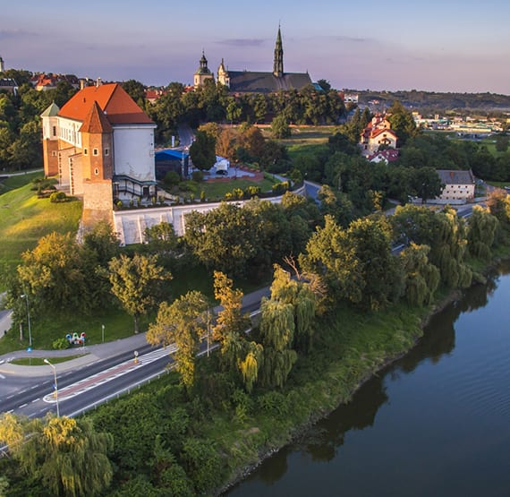

Explore city
Sandomierz
Sandomierz is one of the oldest and historically most significant cities in Poland. Archeological finds around the city indicate that humans have inhabited the area since neolithic times. The city came into existence in the early Middle Ages, taking advantage of an excellent location at the junction of Vistula and San rivers, and on the path of important trade routes.
The first known historical mention of the city comes from the early
12th-century, when the chronicler Gallus Anonymus ranked it together with Kraków and Wrocław as one of the main cities of Poland. The testament (ca 1115-1118) of Bolesław III Wrymouth, in which he divided Poland among his sons, designated Sandomierz as the capital of one of the resulting principalities, the Duchy of Sandomierz.
